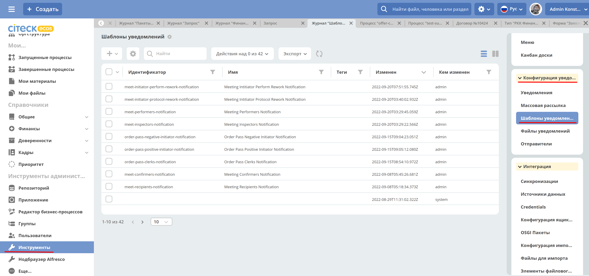
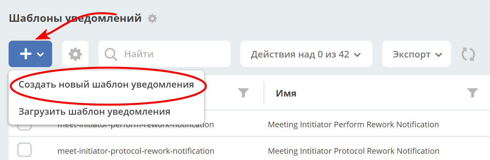
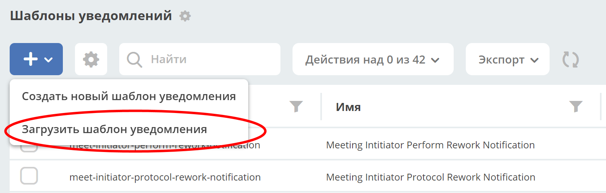
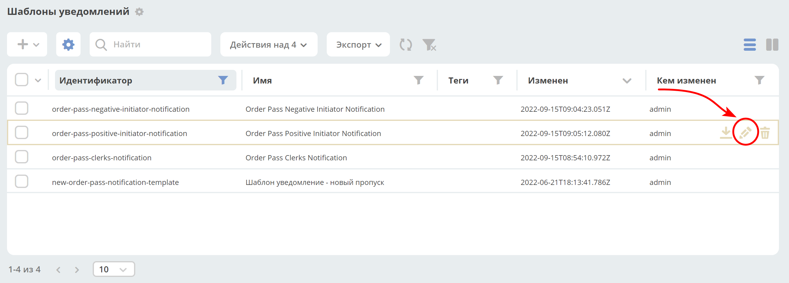
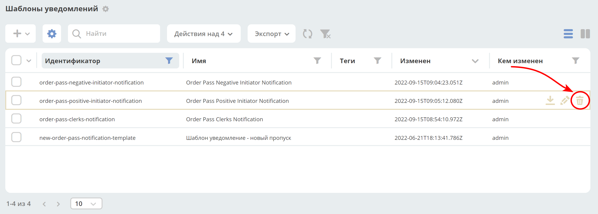
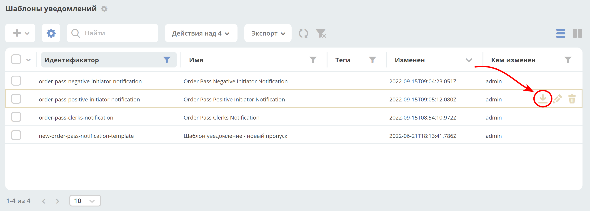
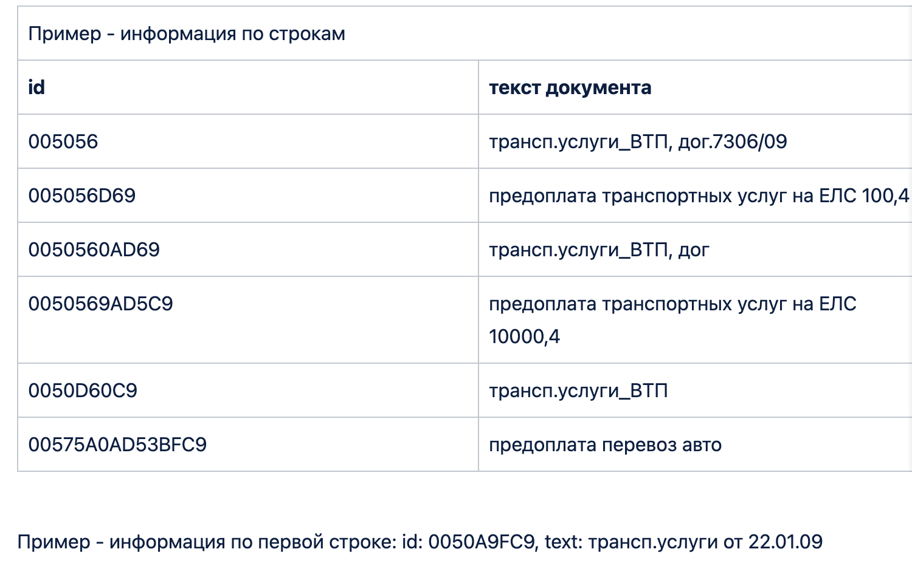
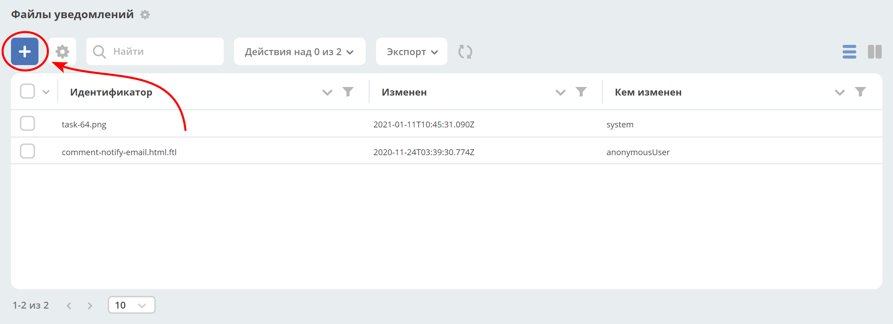
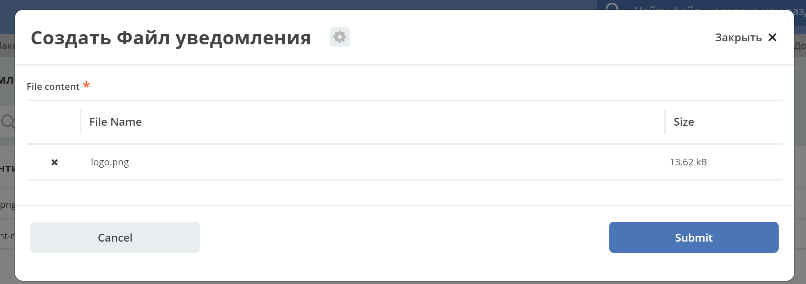

Шаблоны уведомлений
Содержание
1. Общие сведения
1.1 Описание сущности “Шаблон уведомления“
- Id
Уникальный идентификатор шаблона уведомления.
- Name
Имя шаблона уведомления.
- Tags
Теги.
- Notification title
Заголовок уведомления, мульти-язычное поле – строка с поддержкой freemarker.
- Notification body
Многокомпонентное поле для описания тела уведомления с привязкой к указанной локали. В одном шаблоне уведомления предусмотрена поддержка разных локалей (языков).
Lang - Локаль сообщения, например en, ru.
Body - Исходное содержимое текста сообщения c использованием freemarker. При нажатии на кнопку «Редактировать как HTML» открывается richText редактор сообщения для более удобного редактирования html разметки- Model
Модель, исходя из которой будет происходить шаблонизация текста – title или body для уведомлений.
Модель – это map ключ: значение, ключом в данном случае выступает имя переменной, которая будет доступна в шаблоне, а значение – ecos records выражение для вычисления значения переменной.
Базовым record является документ, по которому идет бизнес-процесс. То есть, если в модели указать значение.disp, то вычисляется заголовок по документу. Так же есть доступ к другим объектам через знак$, например, если уведомление отправляется в рамках бизнес процесса, -$process.webUrl(по умолчанию доступны дополнительные переменные$now,$user,$webUrl).
При использовании мульти шаблонов, модель из базового шаблона будет сливаться с моделью, найденной по типу, таким образом часть «базовой» модели может быть описана в базовом шаблоне, а более специфичные атрибуты могут быть вынесены в конкретный шаблон.- Multi templates
Вычисляемые шаблоны, в зависимости от типа документа, по которому отсылается уведомление. Например, может быть «базовый» шаблон, который включает в себя несколько других шаблонов с разными типами документов.
При отправке уведомления, если у документа, по которому отправляется уведомление, тип не соответствует ни одному из мульти-шаблонов, то отправка осуществится по «базовому» шаблону, если тип документа соответствует мульти-шаблону, то отправка произойдет по соответствующему шаблону.- Predicate
Позволяет задать дополнительные условия для связки шаблон - тип. Вычисление предикатов происходит на основе атрибутов модели.
1.2 Журнал “Шаблоны уведомлений“
Для перехода в журнал необходимо в боковом меню выбрать «Инструменты». Далее в правой части перейти в блок «Конфигурация уведомлений» - > журнал «Шаблоны уведомлений».
{kind=link}
1. Операции
2.1 Создание шаблона уведомления
Для создания необходимо перейти в журнал «Шаблоны уведомлений», см. 1.2 Журнал “Шаблоны уведомлений“.
Шаблон уведомления может быть создан несколькими способами:
Создание нового объекта;
Импорт модуля (zip).
2.1.1 Создание нового объекта
Для создания нового объект необходимо нажать на «+» и выбрать «Создать новый шаблон уведомления»
{kind=link}
Описание полей см. 1.1 Описание сущности “Шаблон уведомления“.
Для примера создадим базовый шаблон c уведомлением о том, что создан новый документ.
Открываем форму создания и заполняем следующую информацию:
id - ssg-incident-base-new-incident-to-possible-responsible
name - Базовый шаблон. Новый документ
notification title - Новый инцидент: ${title}.
В данном случае ${title} означает, что из описанной модели будет взято значение, которое является заголовком для документа.
Данное поле является мульти язычным, переключение языков происходит по нажатию на значок флага.
{kind=link}
Notification body - lang = ru, body заполняем следующим текстом:
<#import "ssg-template-lib" as lib>
<@lib.its_test_message/>
<p>
Сообщаем, что сформирован документ, за обработку которого Вы являетесь ответственным.<br>
<@lib.document_link/><br>
Пожалуйста, проверьте рабочий список задач Скиф.<br>
<p>
В данном шаблоне импортируется библиотечный шаблон:
<#macro its_test_message>
<b>Это письмо было отправлено вам в рамках тестирования настроек новой системы.
Вам не нужно отвечать или как-то реагировать на него.</b>
</#macro>
<#macro document_link>
<a href="${web_url}/v2/dashboard?recordRef=${doc_recordRef}"><u><i>${title}</i></u></a>
</#macro>
В шаблонах уведомления поддерживается import и include других шаблонов по их id.
В текущем примере:
<@lib.its_test_message/> - печать блока текста, информирующего о том, что это сообщение является тестовым.
<@lib.document_link/> - печатает ссылку на документ, по которому идет бизнес процесс, в данном случае – сам документ.
Подробнее о использовании макросов, импорте и включении других шаблонов см. документацию apache freemarker - https://freemarker.apache.org
Model - описываем модель, которая потребуется для шаблонизации текста:
Flowable:
web_url : $process.webUrl – используется для формирования ссылки на документ
doc_recordRef : .id – уникальный id документа, так же используется для формирования ссылки на документ
title : .disp – заголовок документа
Ecos BPMN:
См. описание компонента «Уведомление» в документации по Ecos BPMN.
2.1.2 Импорт модуля
Для импорта модуля в журнале «Шаблоны уведомлений» нажмите на «+» и выберите «Загрузить шаблон уведомления»
{kind=link}
В открывшейся форме загрузите zip архив с шаблоном уведомления. Подробнее про модуль «Шаблон уведомления» см. 2.4 Выгрузка шаблона уведомления.
2.2 Редактирование шаблона уведомления
Для редактирования шаблона уведомления перейдите в журнал (см. 1.2 Журнал “Шаблоны уведомлений“), найдите нужный шаблон и нажмите на действие «Редактировать».
{kind=link}
2.3 Удаление шаблона уведомления
Для удаления шаблона уведомления перейдите в журнал (см. 1.2 Журнал “Шаблоны уведомлений“), найдите нужный шаблон и нажмите на действие «Удалить».
{kind=link}
2.4 Выгрузка шаблона уведомления
Для выгрузки модуля шаблона уведомления перейдите в журнал (см. 1.2 Журнал “Шаблоны уведомлений“), найдите нужный шаблон и нажмите на действие «Скачать».
{kind=link}
Модуль представляет собой zip архив с мета-информаций по шаблону и самим контентом шаблона. Для примера, выгрузим модуль для шаблона, созданного на шаге 2.1.1 Создание нового объекта.
Файл ssg-incident-base-new-incident-to-possible-responsible.html.meta.yml является мета информацией, содержимое файла:
{
"id" : "ssg-incident-base-new-incident-to-possible-responsible",
"name" : "Базовый шаблон. Новый документ",
"notificationTitle" : {
"ru" : "Новый инцидент: ${title}"
},
"model" : {
"web_url" : "$process.webUrl",
"doc_recordRef" : ".id",
"title" : ".disp"
},
"multiTemplateConfig" : []
}
Файл ssg-incident-base-new-incident-to-possible-responsible.html.ftl является самим контентом шаблона, его содержимое:
<#import "ssg-template-lib" as lib>
<@lib.its_test_message/>
<p>
Сообщаем, что сформирован документ, за обработку которого Вы являетесь ответственным.<br>
<@lib.document_link/><br>
Пожалуйста, проверьте рабочий список задач Скиф.<br>
<p>
Обратите внимание, что модуль должен быть именно zip архивом, а файлы внутри него чувствительны к наименованию и расширению.
Файл с контентом должен иметь расширение «.html.ftl», а файл с мета информацией должен именоваться по правилу полное_имя_файла_контента_с_расширением.meta.yml
Примечание
Если тело шаблона предусматривает несколько локалей, то в имени файла контента указывается локаль по следующему правилу:
ssg-incident-base-new-incident-to-possible-responsible.html_en.ft для локали en
ssg-incident-base-new-incident-to-possible-responsible.html_ru.ft для локали ru
и т.д.
3. Использование переменных в шаблоне
В шаблонах уведомлений доступны переменные, определенные в модели, см 1.1 Описание сущности “Шаблон уведомления“ блок «Model», а также добавленные сервисы в freemarker.
3.1 Сервисы и константы
В шаблонах уведомлений доступны следующие сервисы, добавленные в freemarker:
link- формирование ссылокgetRecordLink(recordRef: String): String- возвращает полную ссылку на переданный recordRef вида http://<webUrl>/v2/dashboard?recordRef=<recordRef>
meta- сервис для получения различной мета информацияgetWebUrl(): String- возвращает настроенный webUrl сервера
_notification- информация о текущем уведомленииtitle- заголовок уведомленияfrom- отправитель уведомленияto- получатель уведомленияcc- копия уведомленияbcc- скрытая копия уведомления
image- работа с изображениями в шаблоне, см. пример - Вставка изображений в шаблон .toBase64Data(fileName: String): String- возвращает base64 data image представление изображения по переданному имени файла изображенияtoBase64(fileName: String): String- возвращает base64 представление изображения по переданному имени файла изображения
config- предоставляет доступ к Конфигурации Ecos по ключу в формате<область>$<идентификатор>.get(key: String): DataValue- получение значения по ключуgetOrDefault(key: String, defaultValue: Any): DataValue- получение значения по ключу, если значение не найдено, то возвращается значение по умолчаниюgetNotNull(key: String): DataValue- получение значения по ключу, если значение null, то выбрасывается исключение
//получение значения конфигурации по ключу и приведение к типу String <#assign replyEmail = config.getNotNull("app/service-desk$sd-email-reply").asText()>
3.2 Множественные атрибуты
Предположим, что в источнике есть атрибут eventLines, который возвращает список «строк» с атрибутами.
Для получения данных по множественным атрибутам, как и для всех других, используется стандартные records выражения:
lines: eventLines[]{id:skifem:eventLineId,text:VIEW_0POSTXT}- получить список строк, с атрибутами id и VIEW_0POSTXT. Внутри {} можно указывать атрибуты, которые необходимо подгрузить в объект.firstLine: eventLines{id:skifem:eventLineId,text:VIEW_0POSTXT}- аналогично примеру выше, с оговоркой, что будет загружен только первый объект.
{kind=link}
В самом шаблоне уведомления выведем информацию по списку строк в виде html таблицы и отдельной строкой первый элемент:
<style>
table, tr, td {
border: 1px solid;
border-collapse: collapse;
overflow-wrap: break-word;
}
thead {
font-weight: bold;
}
</style>
<table>
<caption>Пример - информация по строкам</caption>
<tr>
<th>id</th>
<th>текст документа</th>
</tr>
<#if (lines?? && lines?size > 0)>
<#list lines as line>
<tr>
<td>${line.id!""}</td>
<td>${line.text!""}</td>
</tr>
</#list>
</#if>
</table>
<br>
Пример - информация по первой строке: id: ${firstLine.id!""}, text: ${firstLine.text!""}
<p>
В результате получим емейл с следующим содержанием:
{kind=link}
3.3 Вставка изображений в шаблон
В шаблонах уведомлений реализована возможность вставлять изображения в html разметку в виде base64 data.
Доступные для вставки изображения находятся в журнале «Файлы уведомлений» («Инструменты» - > «Конфигурация уведомлений» - > журнал «Шаблоны уведомлений»).
Для загрузки нового изображения необходимо нажать на «+» и загрузить изображение. Имя изображения является идентификатором и должно быть уникально.
 {kind=link}
{kind=link}
Для примера, предположим, что в шаблон письма необходимо добавить кнопку с ссылкой на ресурс https://citeck.com. Для этого необходимо осуществить следующие действия:
Загрузить файл изображения test-logo-citeck.png в журнал «Файлы уведомлений».
{kind=link}
В шаблоне добавим html разметку с кнопкой и src в виде base64 изображения, загруженного в пункте №1.
Привет! Это тестовый шаблон с кнопкой-изображение :)
<form action="https://citeck.com/">
<input type="image" src="${image.toBase64Data("test-logo-citeck.png")}" style="max-height: 67px; max-width: 200px;">
</form>
Как видно из шаблона выше, для конвертации изображение в base64 data необходимо у сервиса image вызвать метод toBase64Data и передать ему идентификатор изображения.
В результате получим емейл с кнопкой в виде изображения:
{kind=link}
3.4 Прикрепление вложений (attachments) к email уведомлению
Для того чтобы прикрепить вложение необходимо в шаблоне уведомления в модель добавить атрибут _attachments. В него мы можем указать контент или список из контентов. Выглядеть это должно следующим образом:
{kind=link}
{kind=link}
В значении к полю _attachments необходимо указать Records API атрибут.
Для рекродов, которые хранятся в emodel - _content{bytes,meta:?json}
Примечание
Доступно с версии 2.15.0 микросервиса ecos-notification.
Можно использовать любой атрибут, в котором хранится content рекорда. В примере используется _content, так как он является атрибутом для хранения контента по умолчанию.
Ожидаемая модель:
{
"bytes": "SOj2",
"meta": {
"name": "test.txt",
"ext": "txt",
"mimeType": "text/plain"
}
}
Для рекордов, которые хранятся в Alfresco - cm:content{bytes,previewInfo?json}
Примечание
Доступно с версии 2.5.0 микросервиса ecos-notification.
Ожидаемая модель:
{
"bytes": "SOj2",
"previewInfo": {
"originalName": "test.txt",
"originalExt": "txt",
"mimeType": "text/plain"
}
}
Использование вышеуказанных атрибутов необязательно, главное чтобы атрибут _attachments соответствовал ожидаемой модели.
- bytes
Контент файла закодированный в формат Base64
- mimetype
Mimetype файла
- ext
Расширение файла
- name
Имя файла
Примечание
Если в
originalNameбудет находиться имя без расширения, то система сама допишет расширение файлу из originalExt.Если окажется, что
cm:contentбудет отсутствовать у ноды (или лист контентов будет пустым), то отправится уведомление без прикрепления вложений.